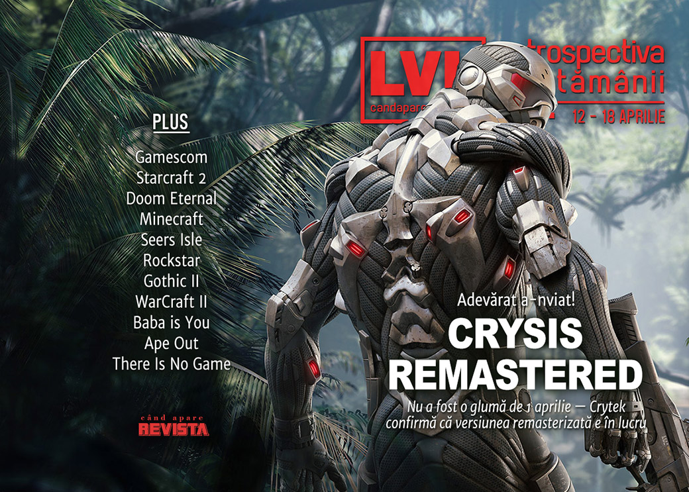

Retrospectiva săptămânii 12 - 18 aprilie 2020
Crysis revine la viață cu o versiune remasterizată, a murit John H. Conway, creatorul jocului Game of Life, se anulează Gamescom, iar comunitatea de creatori de jocuri din România organizează un game jam pentru a strânge fonduri pentru lupta împotriva coronavirusului. Și în plus, aveți, printre altele, material pentru o întoarcere în timp la shooterele anilor ‘90, WarCraft II, Gothic II și începuturile epocii „shareware”.
Linkuri rapide:
- Știri
- Articole (critică, dev, design)
- Made în România
- Anunţuri şi lansări de jocuri
- Prăvălii de jocuri

Știri
- Clasificările date de ESRB jocurilor din SUA vor conține de acum înainte avertismente privind conținutul randomizat (ex: loot boxes). (Polygon, PC Gamer, GameSpace, GamesIndustry.biz)
- A murit John H. Conway la vârsta de 82 de ani. Matematicianul este cunoscut pentru unul dintre primele jocuri video, celebrul Game of Life. (Eurogamer, PC Gamer, GamesIndustry.biz)
- Jurnalistul Jason Schreier, autor, printre altele, a numeroase reportaje cu dezvăluiri din culisele industriei de jocuri, părăsește Kotaku. (Kotaku, Kotaku)
- A fost anulat și Gamescom, dar va primi o versiune digitală. (PC Gamer, GameSpace, EGM, VideoGamesChronicle)
Articole (critică, dev, design)
- How a team of AI researchers took on all comers at StarCraft 2 (PC Gamer)
- What We Remake (Kotaku)
- Sex Games Are Voice Acting's Wildest New Frontier (Kotaku)
- The People Who Use Video Games to Make Nature Documentaries (Vice)
- When are game companies truly being anti-consumer? (PC Gamer)
- Without Tours to Go On, Some Musicians Are Taking to Minecraft (USgamer)
- In Doom Eternal, you must go with the flow (Polygon)
- Meet the people who love playing the healer in video games (The Face)
- How gaming became a form of meditation (BBC)
- Silicon Valley is racing to build the next version of the Internet. Fortnite might get there first. (Washington Post)
Not-a-review
- Rowan from Seers Isle (Unwinnable)
Industrie
- 18 Months After Red Dead Redemption 2, Rockstar Has Made Big Cultural Changes (Kotaku)
- Report: The games industry braces for a recession (GameDaily.biz)
- In a self-isolated world, developers are learning to make games from home (The Verge)
Istorie, retrospectivă
- How secret rooms created the magic and mystery of ‘90s first-person shooters (PC Gamer)
- The Shareware Scene, Part 1: The Pioneers (The Digital Antiquarian)
- Journey into the mysterious and unknown with Gothic 2 (GamesIndustry.biz)
- "Rock Balls": The Making of WarCraft II (Gamasutra)
Dev, making of, mecanici
- Baba Is a tough act to follow (GamesIndustry.biz)
- The evolution of Ape Out (GamesIndustry.biz)
Design, world-building, artă
- I Wish More Games Had Museums Like Modern Warfare 2 (Kotaku)
- Nathan Drake's Misadventure (Kotaku)
- Censorship, cybersex and sheep at LIKELIKE’s Online Museum of Multiplayer Art (RPS)
- Game Box Art Critique April: Final Fantasy VII Remake, Resident Evil 3, Predator: Hunting Grounds (VideoGamer)
Made în România
- Butnariu, RGDA: Industria jocurilor video din România va fi afectată în zona firmelor mici şi a startup-urilor. Criza le va exacerba problemele (Economica.net)
- “S-a lansat Jam de Casă, un Game Jam pentru a crea cea mai mare platformă online cu jocuri românești family friendly gratuite” (RGDA) (sau, pe scurt, pe Zona IT: Un GameJam Românesc nou: Jam de Casă)
- Interviu exclusiv cu Bogdan Vera, programator în cadrul Media Molecule – despre Dreams, carieră şi viaţa într-un studio PlayStation (Go4Games)
Anunţuri şi lansări de jocuri
Anunţate
- XCOM: Chimera Squad, un spin-off XCOM 2 (Kotaku)
- Old World, noul nume al fostului 10 Crowns, 4X-ul istoric dezvoltat de studioul lui Soren Johnson
- Crysis Remastered (PC Gamer)
Acum cu dată de lansare
- Help Will Come Tomorrow: 21 aprilie (GameSpace)
- Before We Leave: 8 mai (DSOGaming)
- Journey vine și pe Steam după un an de exclusivitate Epic Store: 11 iunie (PC Gamer)
Lansate
- 14 aprilie: Industries of Titan (early access) (Epic Store)
- 14 aprilie: Receiver 2 (Steam)
- 15 aprilie: KARDS - The WWII Card Game, un CCG gratuit (Steam)
- 15 aprilie: STATIONflow (Steam)
- 17 aprilie: A Fold Apart (Steam)
Prăvălii de jocuri
Știri
Articole
- Steam Gets ‘Editorial’ When We Weren’t Looking (Gamasutra)
Update catalog
Jocuri gratis și free weekends
- Stay home and play Journey and Uncharted: The Nathan Drake Collection for free (Destructoid)
- Free weekend announced for Total War: Warhammer II (DSOGaming)
- Just Cause 4 and Wheels of Aurelia are free on PC (EGM)
- The trailer for DCS World’s free month on Steam shows that fighter jets can be sentimental too (PC Gamer)
- Borderlands: Game of the Year will be free to play for a week (DSOGaming)
- There Is No Game Is a Cheerfully Deceptive (and Free) Puzzler (Escapist)
Reduceri și promoții
- Humble partners with 2K to fight against corona, with a bundle that features BioShock, Borderlands and XCOM (Destructoid)
- Weekend PC Download Deals for Apr. 17: Steam Devolver Digital Sale (Shacknews)
- Weekend Console Download Deals for Apr. 17: Free Uncharted and Journey (Shacknews)
- Best PC gaming deals of the week – 17th April 2020 (RPS)
Retrospectiva săptămânii este rubrica duminicală în care trecem în revistă evenimentele săptămânii de pe frontul de gaming: știri şi articole (scrise de alții, bineînțeles, că e mai ușor aşa), industrie, lansări, oferte de jocuri, toate numai de savurat la cafeaua de duminică dimineața.
De asemenea, rubrica e deschisă oricui vrea și poate contribui. Dacă ai citit vreun articol sau vreo știre interesantă și crezi că merită incluse în retrospectiva săptămânii, te așteptăm pe forum pe unul dintre topicurile dedicate: Știri, Articole, Gaming România].